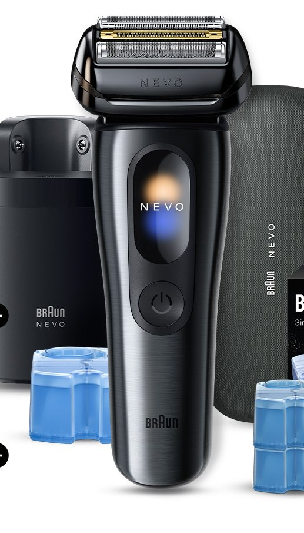
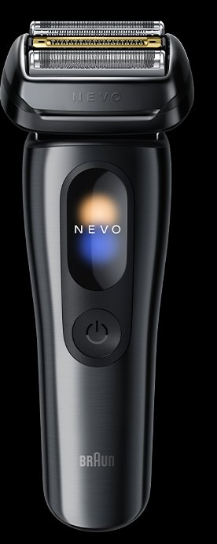
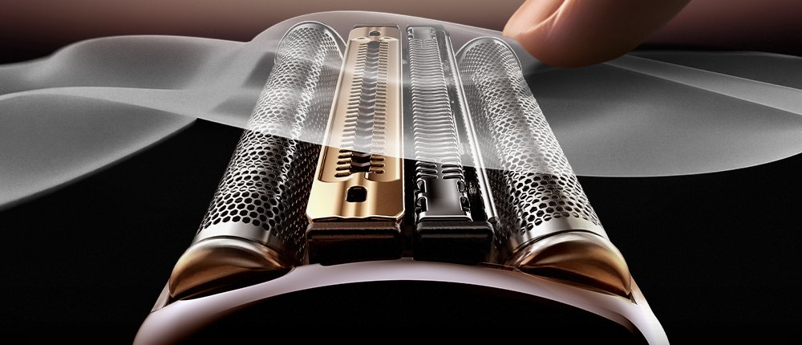
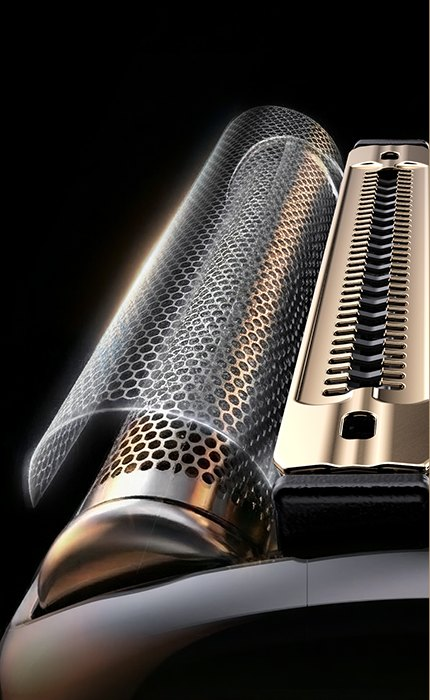
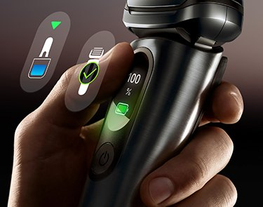

Braun NEVO 11010C Review: Overview
This Braun NEVO 11010C review looks at the new flagship electric shaver that sits above Braun's Series 9 in Korea and Japan. Sold by the official Braun brand store on Naver, the graphite 11010C comes with a cleaning and charging station, and its headline feature is a micro-textured "Silk Glide" foil that Braun says cuts skin friction by 24% versus the Series 9.
We went through the Korean product information notice, Braun's Korean product images, the Japanese launch announcement and spec sheets from Korean and Japanese price-comparison sites to explain what is genuinely new, what it costs and who should consider it.
"Braun's top foil shaver, rebuilt around a smoother foil and a station that cleans, dries and charges it for you."

What Is New: Silk Glide Foil and the 5+1 Head
- Silk Glide foil: a micro-textured foil surface inspired by shark skin; Braun claims 24% less skin friction than the Series 9.
- 5+1 cutting system: the silk-touch foil, a pro blade, a catch blade for flat-lying hairs, a skin guard and a precision trimmer, plus a pop-up long-hair trimmer.
- 250 Diamond Sharp blades: the inner cutter is ground with 250 diamond-cut edges; Braun says it can cut up to 0.12 mm below the skin surface (in-house test).
- 40° flexing head: the head swings up to 40 degrees to follow the jaw and neck, and can be locked.
- Auto power and smart display: a density sensor adjusts motor power to beard thickness in real time, and the display shows battery, cleaning and foil-replacement status.


Daily Use: Shaving, Cleaning Station and Battery
You shave dry or wet with foam; the Korean listing confirms IPX8 waterproofing, so rinsing under the tap is fine. The linear motor is listed at 40,000 cutting actions per minute, and Braun pairs it with a one-piece medical-grade stainless steel body and sound-damping to reduce vibration and noise.
After shaving, you drop the shaver into the 7-in-1 NEVO cleaning station. At the press of a button it cleans, cares for, sanitises (99.9% according to Braun), lubricates, dries and charges the shaver. The station uses replaceable alcohol-based cleaning cartridges, an ongoing cost to budget for. One Japanese reviewer reported 21 cleanings per cartridge with this station, fewer than the roughly 30 often quoted for Braun stations, so expect to buy refills about monthly if you clean daily.
Battery life is about 60 minutes after a 60-minute charge, and a 5-minute quick charge gives enough power for one shave. Braun recommends replacing the foil and cutter every 18 months.


Key Specs
| Spec | Braun NEVO 11010C |
|---|---|
| Type | Foil (reciprocating) electric shaver, wet & dry |
| Cutting system | 5+1 (silk-touch foil, pro blade, catch blade, skin guard, precision trimmer + pop-up trimmer) |
| Inner cutter | 250 Diamond Sharp edges |
| Head | Flexes up to 40°, lockable |
| Waterproofing | IPX8 (about 60 min at 1.2 m per Korean listing) |
| Battery | Li-ion; about 60 min use after 60 min charge; 5-min quick charge |
| Charger | 100–240 V, 50/60 Hz, 7 W |
| Size / weight | About 168 × 64 × 50 mm; about 231 g (Japanese spec) |
| In the box | Shaver, 7-in-1 cleaning & charging station, cleaning cartridge, fabric travel case, brush |
| Color | Graphite |
| Made in | Germany (shaver) |
| Released | Korea August 2026; Japan July 31, 2026 |
| Korean price | 599,000 KRW on the official Braun store at time of writing |
Specifications come from the Korean product information notice (상품정보제공고시), Braun's Korean listing images and the Japanese launch announcement for the NEVO series; they were not lab-measured by us. Bundle contents (number of cartridges, trimmer or gel gifts) vary by store and promotion.
How It Compares
| Braun NEVO 11010C | Braun Series 9 PRO+ | Rotary flagship shavers | |
|---|---|---|---|
| Foil | Micro-textured Silk Glide foil | Standard foil | Rotating circular heads |
| Skin friction claim | 24% lower than Series 9 | Baseline | Varies |
| Cleaning station | 7-in-1, more compact | SmartCare / PowerCase | Model dependent |
| Battery | About 60 min | About 60 min | About 60–90 min |
| Typical Korean price | About 550,000–650,000 KRW | About 400,000–500,000 KRW | About 300,000–600,000 KRW |
| Best for | Sensitive skin, people who want the newest Braun | Close shave at a lower price | People who prefer circular motion |
Pros & Cons
| Pros | Cons |
|---|---|
| Silk Glide foil aims at less irritation for sensitive skin | Expensive; ongoing cost of cleaning cartridges |
| Station cleans, dries and charges automatically | Station needs counter space and a power outlet |
| IPX8 wet & dry use, 5-min quick charge | 60-minute battery is average for the price |
| Made in Germany, worldwide 100–240 V charger | Independent Japanese reviews say closeness is not dramatically better than cheaper models |
Who It Suits (and Who Should Skip It)
- Yes: Men with sensitive skin or razor burn who want a gentler foil shaver.
- Yes: Anyone who hates cleaning a shaver by hand and wants a station to do it.
- Yes: As a premium gift; the graphite finish and station look tidy in a bathroom.
- No: Budget buyers; a Braun Series 7 or 9 shaves very closely for much less.
- No: People who do not want to buy cleaning cartridges every month or so.
Braun NEVO 11010C FAQ
What is the Braun NEVO 11010C?
It is a foil (reciprocating) electric shaver from Braun's new top-tier NEVO line, launched in Japan on July 31, 2026 and in Korea in August 2026. The 11010C is the graphite version sold with the 7-in-1 NEVO cleaning and charging station, a fabric travel case and a cleaning brush. The shaver body is made in Germany.
What is Silk Glide (silk-touch foil)?
Braun says the NEVO foil has a world-first micro-textured surface, inspired by shark skin, that reduces friction against the skin by 24% compared with its Series 9. In Korean listings this is called Silk Glide technology; in Japan it is called the silk-touch foil.
How long does the battery last?
Braun and Japanese retail spec sheets list about 60 minutes of shaving after a 60-minute full charge. The Korean listing adds a 5-minute quick charge that is enough for one shave.
Can I use it in the shower?
Yes. It is a wet and dry shaver rated IPX8 (the Korean listing says it stays waterproof for about 60 minutes at 1.2 m), so you can shave with foam or gel in the shower and rinse it under the tap.
Does it work on U.S. voltage?
The charger is rated 100–240 V, 50/60 Hz, 7 W, so it works worldwide; you only need a plug adapter for a Korean or Japanese plug. Warranty terms differ by country, so check them before buying abroad.
Braun Wet & Dry Shavers with Cleaning Station
The NEVO 11010C is sold in Korea via the official Braun store on Naver. Compare Braun wet & dry electric shavers with cleaning stations available on Amazon.